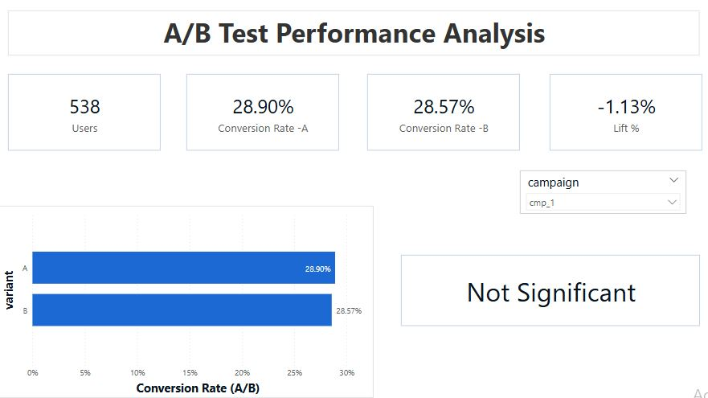

CRM Intelligence & Monitoring Dashboard
Project Overview
This project delivers a fully interactive CRM analytics
dashboard designed for a simulated iGaming company. It
provides a 360° view of campaign effectiveness, user
engagement, A/B testing outcomes, alert monitoring, and
behavioral insights through the user journey. The report
enables data-driven decision-making by uncovering
trends, conversion bottlenecks, and user segmentation
across marketing initiatives.
Project Goals
-
Campaign Analysis: Measure the
reach, engagement, and conversion performance of CRM
campaigns.
-
Funnel Optimization: Identify
drop-off points in the user journey from delivery to
conversion.
-
A/B Testing: Compare control and
test group performance with mock statistical
significance.
-
Monitoring & Alerts: Analyze
system-generated alerts, their severity, and
temporal trends.
-
Session Behavior: Track user
interaction with the platform via events and session
metrics.
-
Executive Reporting: Provide
high-level KPIs and summaries for quick stakeholder
insight.
Data Model
-
Users: Demographics and preferences
-
Campaigns: CRM campaign metadata
-
A/B Tests: Test/control group
assignments
-
Deposits: Transaction data linked
to campaigns
-
Monitoring Logs & Alerts: System
alerts by type and reason
-
Sessions & Event Tracking: User
behavior during site visits
-
Feedback:Ratings and text feedback
-
Campaign Costs:Budget tracking and
ROI estimation
Tools and Technologies
-
Python (Pandas & NumPy): Created
synthetic data to simulate real-world CRM scenarios.
-
Power BI Desktop: Data modeling,
DAX measures, and interactive visualizations.
-
DAX: Defined KPIs and calculated
measures
-
Power Query (M): Data
transformation and preprocessings
Data Preparation
-
Created synthetic datasets representing 90,000
users, 55+ CRM campaigns, thousands of events,
sessions, deposits, feedback entries, and alert logs
-
Each funnel stage (Delivered → Opened → Clicked →
Converted → Deposited) was generated per campaign
with realistic drop-off logic.
-
Session and behavioral data were assigned based on
engagement logic tied to campaign interaction.
-
Campaign-specific A/B test groups, user feedback,
and alerts were also constructed to support
cross-sectional analysis and executive summaries
Visualization:
